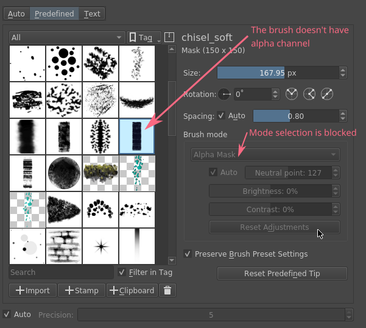
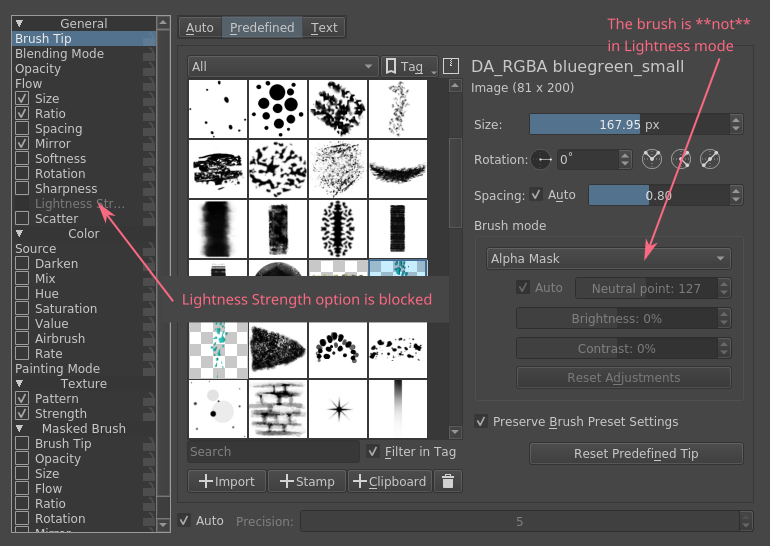
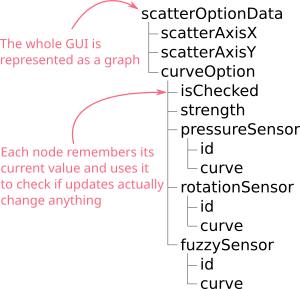

In Krita we have a really complicated system of brush settings, so in the beginning it would be nice to make a short overview of what we have
PaintOp
PaintOp is a brush engine that can load a brush preset and paint on canvas
PaintOpOption
Option is a high-level property of the brush. E.g. "Size", "Opacity" or "Smudge Rate". In the GUI an option is represented as a single page full of smaller settings. Most of Krita options also have a curve that links option's value to the stylus sensors.
Sensor
Sensor represents a single sensor available in the stylus.
The building block of any brush engine GUI is a PaintOpOption. When building a configuration widget for a PaintOp we just compose a set of independent options, pass them the brush preset (in a form of KisPropertiesConfiguration object) and show the result to the user.
Each option has four responsibilities:
read/write serialized XML or properties data
define dependencies between properties of the option and other options, for example
Brush Application widget is available only for RGB brushes. For all standard brushes it should be grayed out and set to "Mask" mode

Lightness Strength option is available only when an RGB brush is selected and "Lightness Map" mode is enabled

show options in the GUI as Qt's widgets
apply the actual effect of the option to the stroke on the canvas
The problem of our current implementation is that all four responsibilities are packed either in one (sometimes two) classes (see e.g. KisAirbrushOptionWidget, or KisSmudgeOption + KisSmudgeOptionWidget). And the dependencies logic is usually implemented in Widget part of the pack, which makes it extremely hard to debug and maintain (not speaking about porting to QML).
Lager is a C++ library to assist value-oriented design by implementing the unidirectional data-flow architecture. It is heavily inspired by Elm and Redux, and enables composable designs by promoting the use of simple value types and testable application logic via pure functions.
Value oriented design means that the library operates with immutable "value types". We don't "edit" any model. When we want to change something we just replace the whole "state".
For Krita it means that we have a C++ structure for each part of the brush settings and can manipulate it easily. See, for example, KisAirbrushOptionData which represents the corresponding option:
KisAirbrushOptionData is a simple structure without any constructor, destructor or virtual functions. It is assignable and comparable. One can also write or read its value to a KisPropertiesConfiguration object.
The main benefit of having such representation of the option is that now we can compare old and new value of the option and if the value hasn't changed, don't issue any update. It solves the problem of cycling updates that we have in the old implementation. The old implementation stores all the options in a single KisPropertiesConfiguration, so we cannot split or compare it.
The original idea of Lager is that the system would be implemented in a fully "functional
programming" approach. That is, there is a single "state" and the GUI calling "pure functions" to replace this state. We cannot use this "functional" design fully right now, but we can use other composing tools lager provides for our benefit.
Basically, Lager provides tools for building tree-like structures of values that depend on each other in uni-directional way.
Let's consider the following simplified example of a scatter option:
You can see that the scatter option is composed of a curve option and a few own properties, like scatterAxisX and scatterAxisY.
The whole GUI is represented as a graph. Each node of this graph knows its value (and has a representation as a plain C++ struct).

Since each node knows its current value, when an update comes, the node can compare the new value against the current one and cancel update propagation in case the value haven't changed. It allows us to avoid the problem of cycling updates, since a lot of Qt's widgets emit updates even when the value doesn't change.
lager::state<> is the single source of truth in the system. It stores the actual data and always represents the root of the graph.
lager::cursor<> is a node of the graph. A cursor connects to the state and track all of its updates. One can read or write into the cursor and the value will be propagated up the tree:
// create state with automatic updateslager::state<KisScatterOptionData,lager::automatic_tag>optionState;// connect to one specific subvalue of the statelager::cursor<qreal>strength=optionState[&KisScatterOptionData::curveOption][&KisCurveOptionData::strength];// read the linked valuestrengthSpinBox->setValue(strength.get());// write the linked valuestrength.set(strengthSpinBox->value());// subscribe to the linked value updates// (please note that lager also has a way to connect via// native Qt signals)strength.bind(std::bind(&QDoubleSpinBox::setValue,strengthSpinBox,std::placeholders::_1));
lager::reader<> and lager::writer<> work in the same way as cursors, but for read-only and write-only access types
When creating a node with a cursor one can not only access member variables, but also do transformations on the fly!
lager::state<KisScatterOptionData,lager::automatic_tag>optionState;// connect to one specific subvalue of the statelager::cursor<qreal>strength=optionState[&KisScatterOptionData::curveOption][&KisCurveOptionData::strength];// create a cursor that automatically scales the strength value from 0...1 range// to 0...100lager::cursor<qreal>scaledStrength=strength.zoom(kiszug::lenses::scale<qreal>(100.0));
Here we use a .zoom() expression with a lens that implements conversion of the value in both directions. That is, when scaledStrength value is read, the lens multiplies the source value by 100.0. When scaledStrength is written, it automatically divides the new value by 100.0 before writing into the source.
In some cases one needs to combine multiple cursors coming from different sources. For example, Lightness Strength option's checked state depends on the two separate values:
whether the user checked it using the checkbox
whether Lightness Strength is actually supported by the brush
When the brush does not support Lightness Strength, then the option is unchecked and disabled. That can be written in Lager using the lager::with() expression:
lager::state<KisLightnessStrengthOptionData,lager::automatic_tag>optionState;// the cursor provided by the brush option externallylager::cursor<bool>allowedByTheBrush=...;// connect to the user-set valuelager::cursor<bool>isCheckedByUser=optionState[&KisLightnessStrengthOptionData::curveOption][&KisCurveOptionData::isChecked];// combine the two cursors using logical-and operator into// an "effective" isChecked value;lager::reader<bool>effectiveIsChecked=// `lager::with()` expression combines multiple cursors into one tuplelager::with(allowedByTheBrush,isCheckedByUser)// `.map()` expression accepts a standard function or functor which is used to// transform the source cursor on-the-fly.map(std::logical_and{});
We use such "effectiveValue" design a lot. It is the main tool against the cycling dependencies. The point is, we cannot assign anything to isCheckedByUser from within the update, it would create a cycling dependency:
// piping one cursor into another creates loops, don't do this!allowedByTheBrush.bind(std::bind(&lager::cursor<bool>::set,&isCheckedByUser,std::placeholders::_1);
Such design has a small complication though. This "effective" value is no longer serialized by KisScatterOptionData automatically, since it is not present in KisScatterOptionData. To overcome this issue we use the process of "baking" the model into the data. This process will be explained later.
Lager performs value transformations via so called transducers. Transducer is a special form of a lambda expression that allows combining multiple operations into a single C++ entity, which can be manipulated later. Standard transducers for Lager are provided by zug library (check official documentation for zug). Krita also provides a set of useful transducers in KisZug.h.
Let's check an example from KisPredefinedBrushModel.h. Our brightness adjustment is stored in a form of a qreal value with range 0...1, but the GUI widget shows it as an integer percentage value in range 0...100. Here is an example of how we can link these values with Lager:
structPredefinedBrushData{// source value is `qreal`!qrealbrightnessAdjustment{0.0};};// destination value is `int`!lager::cursor<int>brightnessAdjustment=predefinedBrushData[&PredefinedBrushData::brightnessAdjustment]// `xform` expression accepts two transducers that transform the expression// on-the-fly. The first transducer is a "getter", the second is a "setter".xform(// getter: multiply the value by 100.0 and then round it to the nearest// integerkiszug::map_mupliply<qreal>(100.0)|kiszug::map_round,// setter: cast integer into a `qreal` and scale back into 0...1 rangekiszug::map_static_cast<qreal>|kiszug::map_mupliply<qreal>(0.01));
The value oriented design has one non-obvious complication. Since we want all the values to be easily assignable and comparable, we can use no polymorphism. Basically, virtual functions are prohibited in the "values" we operate with.
Consequently, if we need to extend some type, e.g. KisCurveOptionData, we cannot do that by overriding virtual methods (what we would do in the old design). Instead we should combine KisCurveOptionData with extra data using composition or inheritance. Here is an example of how we do that for KisScatterOptionData:
// Define the scatter-specific options in a separate mixin class that// implements all standard operations: equality comparison, read and writestructKisScatterOptionMixIn:boost::equality_comparable<KisScatterOptionMixInImpl>{friendbooloperator==(constKisScatterOptionMixInImpl&lhs,constKisScatterOptionMixInImpl&rhs);boolaxisX{true};boolaxisY{true};boolread(constKisPropertiesConfiguration*setting);voidwrite(KisPropertiesConfiguration*setting)const;};// Combine this mixin class with KisCurveOptionData and manually forward// all the main operators to the parent classesstructKisScatterOptionData:KisCurveOptionData,,KisScatterOptionMixIn,boost::equality_comparable<KisScatterOptionData>{KisScatterOptionData():KisCurveOptionData(KoID("Scatter",i18n("Scatter"))){}friendbooloperator==(constKisScatterOptionMixInImpl&lhs,constKisScatterOptionMixInImpl&rhs){returnstatic_cast<constKisCurveOptionData&>(lhs)==static_cast<constKisCurveOptionData&>(rhs)&&static_cast<constKisScatterOptionMixIn&>(lhs)==static_cast<constKisScatterOptionMixIn&>(rhs);}boolread(constKisPropertiesConfiguration*setting){returnKisCurveOptionData::read(setting)&&KisScatterOptionMixIn::read(setting);}voidwrite(KisPropertiesConfiguration*setting)const{KisCurveOptionData::write(setting);KisScatterOptionMixIn::write(setting);}};
In this example we manually define a class that combines our scatter-specific mixin class with the base KisCurveOptionData. You see it requires a lot of boiler-plate code. Hence there is a special tool to do such composition automatically :)
// Combine the mixin class with KisCurveOptionData using a special tool class// KisOptionTuple. It inherits from all its template parameters and automatically// implements equality comparison, read and write operators.structKisScatterOptionData:KisOptionTuple<KisCurveOptionData,KisScatterOptionMixIn>{KisScatterOptionData():KisOptionTuple<KisCurveOptionData,KisScatterOptionMixIn>(KoID("Scatter",i18n("Scatter"))){}};
提示
Even though virtual function are prohibited, we still use them in one place, KisDynamicSensor. KisDynamicSensor is a representation of a single sensor in KisCurveOptionData and it is somewhat polymorphic. But these polymorphic sensors are fully contained inside a single curve option. They are created internally and none of their pointers are ever exposed to the outer world.
From the previous chapters you know that each option in Krita has four responsibilities:
read/write serialized XML or properties data
define dependencies between properties of the option and other options, for example
show options in the GUI as Qt's widgets
apply the actual effect of the option to the stroke on the canvas
The problem of the old implementation was that all of them were implemented in a single class, which was hard to maintain and extent.
In the Lager-based implementation each option now has five different entities that map to these responsibilities cleanly:
Data reads/writes to/from XML or properties; has no logic inside!
State --- the single source of truth of the system. It just wraps Data into lager::state<Data> and brings it into the world of Lager.
Model models all dependencies between brush settings and other options; it implements all the logic of the option.
a model is connected to its state via lager::cursor<>
a model creates a Qt Property for each brush setting so we could connect it either to a widget or QML control
Widget implements an actual widget for the option
a widget connects to model's Qt Properties using KisWidgetConnectionUtils. In the future QML controls will be connected to these properties directly.
widgets have no logic inside!
Option is used by KisPaintOp to apply the actual effect to the brush stroke. Options do not depend on any Lager or GUI classes, they only use Data objects to actually read the data.
Let's consider KisPaintingModeOption as a simple example. This option is used to select brush painting mode and has only one setting that can flip between two values: build-up and wash.
Now let's implement a model for this option. Painting mode has a minor complication: it is available only when masking brush feature is disabled. When the user enables masking brush feature, the painting mode option becomes disabled and selects WASH mode automatically.
提示
The code below uses LAGER_QT_CURSOR macro. It defines a cursor of the provided type, creates a Qt Property with the provided name and links it to the cursor. To access the cursor later we should write LAGER_QT(propertyName).
namespace{intcalcEffectivePaintingMode(enumPaintingModemode,boolmaskingBrushEnabled){returnstatic_cast<int>(maskingBrushEnabled?enumPaintingMode::WASH:mode);}}classKisPaintingModeOptionModel:publicQObject{Q_OBJECTpublic:// declare cursors of the modellager::cursor<KisPaintingModeOptionData>optionData;lager::reader<bool>maskingBrushEnabled;//// Define option settings and create Qt Properties for them://// paintingMode is the mode selected by the user in the GUILAGER_QT_CURSOR(int,paintingMode);// effectivePaintingMode is the actual mode used by the brush// calculated from the combination of user selection and the// masking brush presenceLAGER_QT_READER(int,effectivePaintingMode);// A special property type that updates a state (isEnabled + currentIndex)// of a button group in a single signal call. It is useful to avoid partial// updates that can lead to cycles in some cases.LAGER_QT_READER(ButtonGroupState,paintingModeState);// The constructor of the model accepts two cursors. `optionData` is stored in// an external 'state'; `maskingBrushEnabled` cursor is provided by masking// brush optionKisPaintingModeOptionModel(lager::cursor<KisPaintingModeOptionData>_optionData,lager::reader<bool>_maskingBrushEnabled):optionData(_optionData),maskingBrushEnabled(_maskingBrushEnabled)// in paintingMode cursor we just erase the enum type to be able// to make connection to QGroupBox,LAGER_QT(paintingMode){optionData[&KisPaintingModeOptionData::paintingMode].zoom(kiszug::lenses::do_static_cast<enumPaintingMode,int>)}// effectivePaintingMode depends on both inputs of the model,LAGER_QT(effectivePaintingMode){lager::with(optionData[&KisPaintingModeOptionData::paintingMode],maskingBrushEnabled).map(&calcEffectivePaintingMode)}// combine two properties into one state,LAGER_QT(paintingModeState){lager::with(LAGER_QT(effectivePaintingMode),maskingBrushEnabled.map(std::logical_not{})).map(ToControlState{})}{}// bakedOptionData() creates a new 'Data' objects that has all// the "effective" values baked into it.KisPaintingModeOptionDatabakedOptionData()const{KisPaintingModeOptionDatadata=optionData.get();data.paintingMode=static_cast<enumPaintingMode>(effectivePaintingMode());returndata;}};
Please pay attention to bakedOptionData() method of the model. The model has one "effective" property that is not directly stored in its Data storage. Therefore, before serializing the model, we should first bake all the "effective" values into the data object and then use this new object for actual writing. Granted copying option's data objects is cheap and easy now.
Finally, let's consider a simplified version of the code in KisPaintingModeOptionWidget:
classKisPaintingModeOptionWidget:publicKisPaintOpOption{public:KisPaintingModeOptionWidget(lager::cursor<KisPaintingModeOptionData>optionData,lager::reader<bool>maskingBrushEnabled):m_model(optionData,maskingBrushEnabled){// for connectControlState()usingnamespaceKisWidgetConnectionUtils;// Create the main widgetKisPaintingModeWidget*widget=newKisPaintingModeWidget();setConfigurationPage(widget);// Create the button group for mode selectionQButtonGroup*group=newQButtonGroup(widget);// .. skipped ..// .. initialize group and add actual buttons to it ...// .. skipped ..// Connect the group to the model: "paintingModeState" is the// "read" property, "paintingMode" is "write" property. We read// from "effective" property and write directly into 'data'.connectControlState(group,&m_model,"paintingModeState","paintingMode");// connect the changes in the model to the output signal// of the configuration pagem_model.optionData.bind(std::bind(&KisPaintingModeOptionWidget::emitSettingChanged,this));}voidwriteOptionSetting(KisPropertiesConfigurationSPsetting)constoverride{// write **baked** data!m_model.bakedOptionData().write(setting.data());}voidreadOptionSetting(constKisPropertiesConfigurationSPsetting)override{KisPaintingModeOptionDatadata=*m_model.optionData;data.read(setting.data());m_model.optionData.set(data);}private:KisPaintingModeOptionModelm_model;};
Since painting mode is very simple, it doesn't have any Option representation. The brush engine uses its Data object directly.
For a good example of an 'option' let's consider KisMirrorOption. This class is used by the brush engine while painting the actual stroke of the canvas. The responsibility of KisMirrorOption is to accept the state of the stylus (in a form of KisPaintInformation object) and calculate MirrorProperties from it.
#include<KisPaintOpOptionUtils.h>namespacekpou=KisPaintOpOptionUtils;classKisMirrorOption:publicKisCurveOption{public:// The public constructor creates a data object from// the settings pointer and passes it to a private constructor// that initializes all the necessary stateKisMirrorOption(constKisPropertiesConfiguration*setting):KisMirrorOption(kpou::loadOptionData<KisMirrorOptionData>(setting)){}private:// The private constructor initializes all the necessary state// from the data and passes it to the base option class.//// Please note that the data is **not** stored anywhere in the// option, it is used only during the initializationKisMirrorOption(constKisMirrorOptionData&data):KisCurveOption(data),m_enableHorizontalMirror(data.enableHorizontalMirror),m_enableVerticalMirror(data.enableVerticalMirror){}public:MirrorPropertiesapply(constKisPaintInformation&info)const{// ...// skipped some calculations using:// * m_enableHorizontalMirror// * m_enableVerticalMirror// * KisCurveOption::computeSizeLikeValue(info)// ...MirrorPropertiesmirrors;mirrors.verticalMirror=...;mirrors.horizontalMirror=...;mirrors.coordinateSystemFlipped=...;returnmirrors;}private:boolm_enableHorizontalMirror;boolm_enableVerticalMirror;};
When porting is it recommended to use KisBrushOp as an reference implementation.
The rough plan for porting an arbitrary painting engine FooOp to lager is the following:
Port the GUI part
Open KisFooOpSettingsWidget class and look at its constructor that creates all the option widgets.
Replace all standard option widgets with the already ported ones. Use KisBrushOpSettingsWidget as a reference of existing widgets.
Test if GUI still works correctly and affects the brush in an expected way
Port all non-standard options to lager and add them to KisFooOpSettingsWidget. Usually, old and new class names map as the following:
KisFooBarOptionData usually borrows reading and writing code from KisPressureFooBarOption
KisFooBarOptionModel is just written from scratch
KisFooBarOptionWidget borrows GUI code from KisPressureFooBarOptionWidget
Use KisScatterOptionData, KisScatterOptionModel and KisScatterOptionWidget as a reference implementation.
Test if GUI still works correctly and affects the brush in an expected way
Port the painting part
Open KisFooOp
Replace all standard KisPressureFooBarOption classes with the already ported ones. Use KisBrushOp as a reference of existing options.
Port all non-standard options to lager: you just need to extract KisPressureFooBarOption::apply() function into a separate class named KisFooBarOption. Use KisScatterOption as a reference implementation.
Test if the brush still reacts to the GUI changes in an expected way
Check if any of the options you ported had KisPressureFooBarOption::lodLimitation() method. If so, port these limitations to your new KisFooBarOptionData and use a special creation function KisPaintOpOptionWidgetUtils::createOptionWidgetWithLodLimitations() to create a widget for it. Use KisSizeOptionData and KisSizeOptionWidget as a reference implementation.
If any new brush option has "effective" values, verify that you have KisFooBarOptionModel::bakedOptionData() method in the model and calls it from KisFooBarOptionWidget::writeOptionSetting() in the widget.
Open KisFooOpSettings and port all the uniform properties to use new data classes. Use KisColorSmudgeOpSettings as a reference implementation.